3.6. Cuestionario
En esta aplicación vamos a ver:
- Definición de variables de lista para el almacenamiento de las preguntas y respuestas en las listas.
- Secuenciación por una lista con un índice, cada vez que el usuario hace clic en Siguiente, aparecerá la siguiente pregunta.
- Uso de condicionales (if): realizar determinadas operaciones sólo bajo condiciones específicas. Vamos a utilizar un bloque if para manejar el comportamiento de la aplicación cuando el usuario llega al final de la prueba.
- Cambio de una imagen para mostrar una imagen diferente para cada pregunta del cuestionario.
La aplicación tiene una interfaz sencilla para la visualización de la pregunta y para permitir al usuario contestar.
Añadir los componentes enumerados en la tabla:
| Componente | Paleta | Nombre asignado | Objetivo |
| Imagen | Interfaz de usuario | Imagen1 | Imagen de la pregunta actual |
| Etiqueta | Interfaz de usuario | EtPregunta | La cadena de la pregunta |
| Disposición Horizontal | Disposición | DisposiciónHorizontal1 | Distribución de la respuesta y el botón |
| CampoDeTexto | Interfaz de usuario | CTRespuesta | Donde se introduce la respuesta |
| Botón | Interfaz de usuario | BRespuesta | Botón para corregir |
|
Disposición Horizontal |
Disposición |
DisposiciónHorizontal2 |
Distribución de la respuesta y el botón |
| Etiqueta | Interfaz de usuario | EtCorregir | Muestra Correcta o Incorrecta |
| Botón | Interfaz de usuario | BSiguiente | Pasa a la siguiente pregunta |
|
Etiqueta |
Interfaz de usuario |
EtPunttos |
Muestra los puntos |
Establezca las propiedades de los componentes de la siguiente manera:
- Establecer Imagen1, que es la primera que debe aparecer. Establecer su ancho en "Ajustar al contenedor" y su altura a 200. Busca imágenes relacionadas con las preguntas.
- Establecer EtPregunta Texto en "Pregunta".
- Establecer CTRespuesta Pista a "Introduzca una respuesta". Establecer su propiedad Texto en blanco. Muévela a DisposiciónHorizontal1.
- Cambiar BRespuesta Texto a "Enviar Respuesta", mover a DisposiciónHorizontal1.
- Cambiar BSiguiente Texto a "Siguiente", mover a DisposiciónHorizontal2.
- Cambiar EtCorregir Texto en blanco, mover a DisposiciónHorizontal2.
- Establecer EtPuntos Texto en "Puntos".
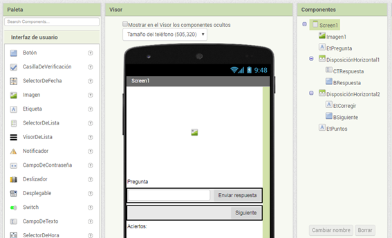
Añadir comportamientos a los Componentes
Deberás programar los siguientes comportamientos:
- Cuando se inicia la aplicación, la pregunta aparece por primera vez, incluyendo su imagen correspondiente.
- Cuando el usuario hace clic en BSiguiente, la segunda pregunta aparece. Cuando se hace clic en él una vez más, la tercera cuestión aparece, y así sucesivamente.
- Cuando el usuario llega a la última pregunta y hace clic en BSiguiente, la primera pregunta debería aparecer de nuevo.
- Cuando el usuario responde a una pregunta, la aplicación le informará si es correcta o no.
Para empezar, definiremos dos variables de lista sobre la base de los elementos enumerados a continuación:
- ListaPreguntas que contenga la lista de preguntas
- ¿Cuál es el lenguaje de programación más utilizado en el mundo?
- ¿Qué sistema operativo es el más utilizado en España en dispositivos móviles?
- ¿Qué nombre recibe Android 8.0?
- ListaRespuestas para mantener la lista de respuestas correspondientes.
- Java
- Amdroid
- Oreo
Primero creamos la variable y le agregamos el componente “construye una lista” del bloque “Listas”. A esta variable vamos añadiendo las preguntas.
Lo mismo hacemos para lo variable ListaRespuestas.
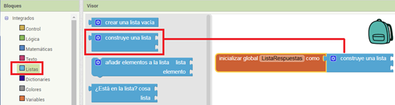
Como puedes observar el componente “construye una lista” solo permite agregar dos elementos. Para añadir más elementos haz clic en la ruleta azul de configuración y arrastra el componente “elemento” a la lista según se muestra en la siguiente imagen.
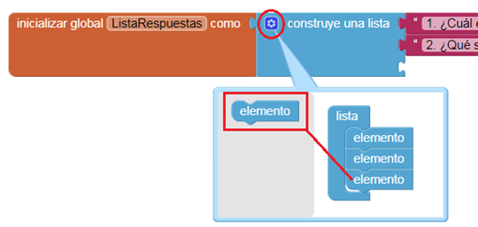
Lo mismo hacemos para lo variable ListaRespuestas. Para ahorrar trabajo puedes duplicar la variable creada y modificarla con los nuevos datos.
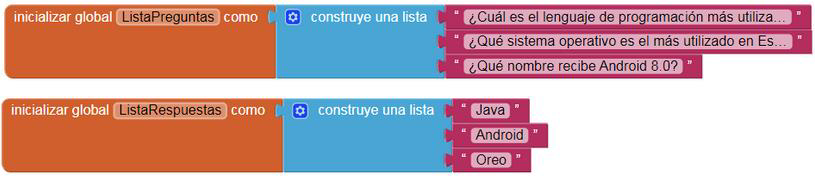
Definición de la variable Index
La aplicación necesita para realizar un seguimiento de la cuestión actual que el usuario haga clic en BSiguiente para continuar con el cuestionario. Define una variable llamada PreguntaActual para ello, y la variable servirá como índice tanto a ListaPreguntas y ListaRespuestas.
 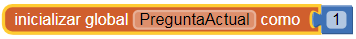
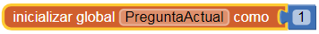
Viendo la primera pregunta
Al igual que con cualquier aplicación, es importante trabajar de forma incremental y definir un comportamiento cada vez. Para empezar, vamos a pensar sólo en la pregunta, específicamente, que se muestra en la lista cuando la aplicación se inicia. Volveremos para hacer frente a las imágenes un poco más tarde.
Vamos a hacer que los bloques de código trabajen con independencia de las cuestiones específicas que se encuentran en la lista. De este modo, si decide cambiar las preguntas o crear una nueva prueba copiando y modificando esta aplicación, sólo deberás cambiar las preguntas reales en las definiciones de lista.
El bloque nos pide que especifiquemos la lista y un índice (una posición en la lista). Si una lista tiene tres elementos, podemos introducir 1, 2, o 3, según el índice. Para este primer comportamiento, cuando la aplicación se inicia, queremos seleccionar el primer elemento de ListaPreguntas y poner en él EtPregunta.
 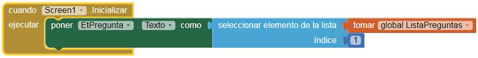
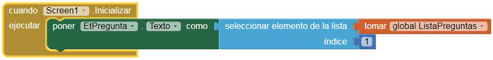
Iterar a través de las preguntas
Ahora programaremos el comportamiento de BSiguiente. Primero debemos aumentar la variable PreguntaActual en 1. De esta forma al hacer clic vamos avanzando en la lista de preguntas. Además debemos poner en la EtPregunta el texto de la pregunta correspondiente.
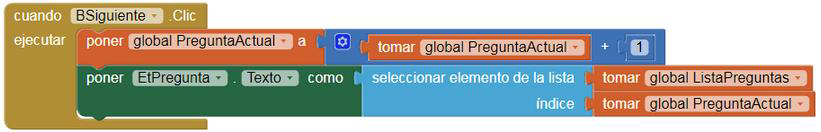
 El problema de la aplicación es que simplemente se incrementa a la siguiente pregunta cada vez sin ningún tipo de preocupación sobre el final de la prueba. Cuando PreguntaActual ya es 3 y el usuario hace clic en el BSiguiente, la aplicación cambia PreguntaActual de 3 a 4, pero el índice 4 no existe. Para solucionar este problema utilizaremos la función if. De tal forma que si el índice es mayor de 3 nos llevará de nuevo a la primera pregunta. Con el fin de facilitar la programación y que el bloque funcione correctamente independientemente del número de preguntas que tengamos, vamos a utilizar el componente "longitud de la lista lista" del bloque Lista y el componente tomar del bloque Variables.
El problema de la aplicación es que simplemente se incrementa a la siguiente pregunta cada vez sin ningún tipo de preocupación sobre el final de la prueba. Cuando PreguntaActual ya es 3 y el usuario hace clic en el BSiguiente, la aplicación cambia PreguntaActual de 3 a 4, pero el índice 4 no existe. Para solucionar este problema utilizaremos la función if. De tal forma que si el índice es mayor de 3 nos llevará de nuevo a la primera pregunta. Con el fin de facilitar la programación y que el bloque funcione correctamente independientemente del número de preguntas que tengamos, vamos a utilizar el componente "longitud de la lista lista" del bloque Lista y el componente tomar del bloque Variables.
 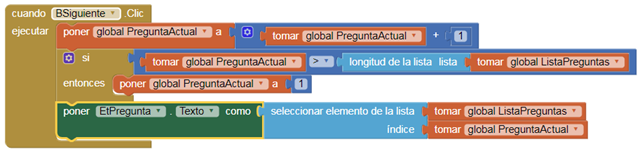
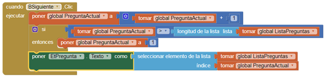
Cambio de la imagen para cada pregunta
Vamos a crear la variable ListaFotos para incluir las imágenes. Busca imágenes relacionadas con las preguntas y las subes al apartado Medios que se encuentra debajo de Componentes.
Nota: Al descargar las imágenes de internet suelen tener nombres muy largos y complejos. Renómbralas con nombres cortos sin caracteres especiales. Procura buscar imágenes de pequeño tamaño y con poco peso.
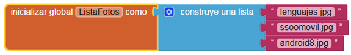
Ahora que ya has programado todos los comportamientos para moverse a través de las preguntas, vamos a mostrar las imágenes para cada pregunta.. En este momento, la aplicación muestra la misma imagen independientemente de la pregunta que se está preguntando.
Puedes cambiar esto por una imagen correspondiente a cada pregunta que aparezca cuando el usuario hace clic en el BSiguiente. Para ello modificar el controlador de eventos BSiguiente.Click para cambiar la imagen cada vez que cambie el texto de la pregunta.
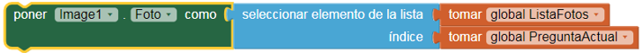
Comprobación de las respuestas del usuario
Así que ahora vamos a añadir bloques que informen de si el usuario ha respondido a una pregunta correctamente o no. Nuestra interfaz está configurada para que el usuario introduzca su respuesta en CTRespuesta y luego haga clic en BRespuesta. La aplicación debe comparar la entrada del usuario con la respuesta a la pregunta actual utilizando un bloque ifelse. La etiqueta EtCorregir entonces debe ser modificada para informar de si la respuesta es correcta o no.
 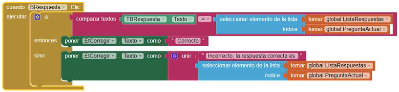
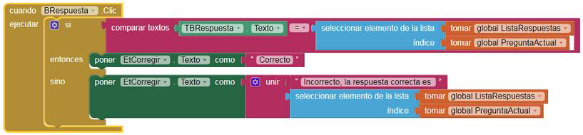
La aplicación debería funcionar, pero es posible que notes que cuando se hace clic en el BSiguiente, el "correcto" o "incorrecto" del texto y la respuesta anterior todavía están, aunque ya estás en la siguiente pregunta. Esto es bastante inofensivo, pero los usuarios
de la aplicación sin duda se darán cuenta de estos problemas de interfaz de usuario.
Para limpiar la EtCorregir y TBRespuesta, pondremos los bloques que eliminenel texto en el controlador de eventos BSiguiente.Click.
 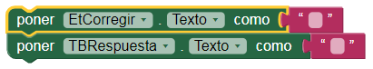
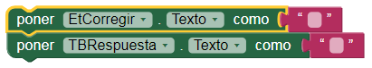
Actividad
Mejorar la aplicación incluyendo al menos los siguientes cambios:
- Añadir 7 preguntas nuevas.
- Añade fotos relacionadas con las preguntas.
- En la EtPuntos debe aparecer el número de puntos obtenidos, teniendo en cuenta que cada acierto suma 1 punto y los fallos restan 1 punto.
Obra publicada con Licencia Creative Commons Reconocimiento Compartir igual 4.0